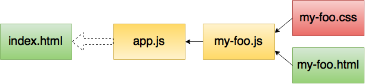
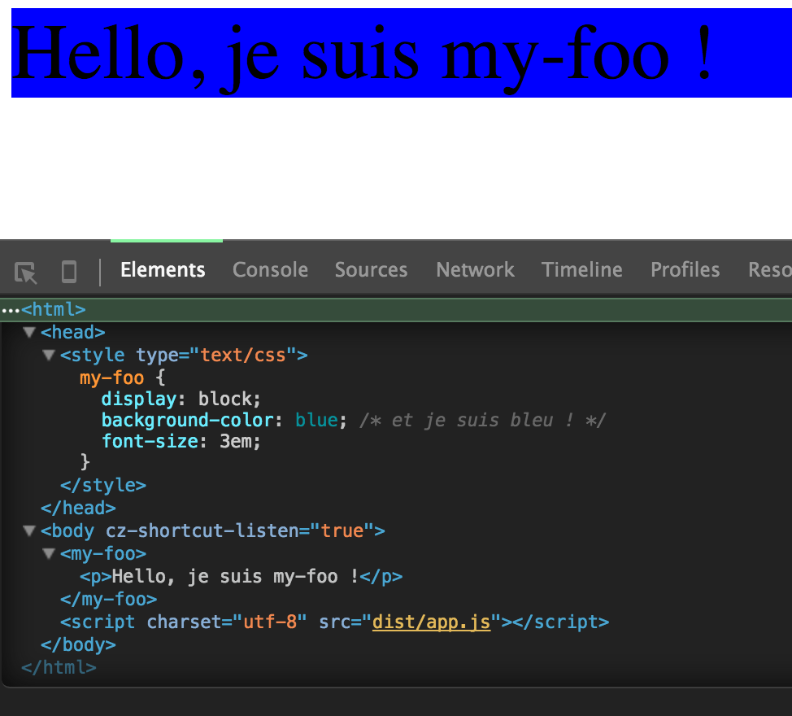

Webpack
Le packager du futur pour des applications front modulaires
Par :Webpack to the rescue

“Webpack takes modules with dependencies and generates static assets representing those modules.”
Un exemple simple
- Un fichier html racine, notre template de base
- Un fichier JS racine, celui de mon application
- Un fichier JS, d'un composant
- Un fichier css, le style du composant
- Un fichier html, le template du composant
<my-foo></my-foo>
<script charset="utf-8" src="dist/app.js"></script>
// app.js
import './components/my-foo/my-foo';
Hello, je suis my-foo !
/* my-foo.css */
my-foo {
background-color: blue; /* et je suis bleu ! */
font-size: 3em;
}
// my-foo.js
import template from './my-foo.html';
import './my-foo.css';
// création du custom element my-foo
const MyFooProto = Object.create(HTMLElement.prototype);
MyFooProto.createdCallback = function() {
this.innerHTML = template; // utilisation du template importé
};
document.registerElement('my-foo', {prototype: MyFooProto});
Le résultat ?
webpack.config.js
module.exports = {
context: __dirname, // la racine de l'app (fs)
entry: {
app: [ './public/app.js' ] // les points d'entrée de l'app
},
output: {
path: __dirname + '/dist', // le path absolu de l'output (fs)
filename: 'app.js', // le nom de l'output
publicPath: '/dist/' // le path de l'output relatif au host
},
module: {
loaders: [
{
test: /\.html$/, // si je rencontre un import de fichier html...
loader: 'html' //... alors j'utilise le loader html
},
{
test: /\.css/, // si je rencontre un import de fichier css...
loader: 'style!css' //... alors j'utilise les loaders style et css
},
{
test: /\.js$/, // si je rencontre un import de fichier js...
exclude: [/node_modules/],//... qui n'est pas dans node_module/...
loader: 'babel' //... alors j'utilise le loader babel
}
// pour tout le reste, webpack utilise le js loader (built-in)
]
}
};
Lancer Webpack
webpack
# Dev : sourcemaps
webpack -d [--watch]
# Prod : minification, optimisations
webpack -p
Allons plus loin...
Déplacer les styles dans un fichier à part
var ExtractTextPlugin = require('extract-text-webpack-plugin');
plugins: [
new ExtractTextPlugin('app.css')
],
{
test: /\.css/,
loader: ExtractTextPlugin.extract('style', 'css')
},
<link rel=stylesheet type="text/css" href="dist/app.css">
Linter le code
module: {
preLoaders: [
{
test: /\.js$/,
exclude: /node_modules/,
loader: "eslint"
}
],
Zipper le bundle
var CompressionPlugin = require('compression-webpack-plugin');
plugins: [
new CompressionPlugin()
]
Et mes images dans mon html/css ? Mes fonts ?
<img src="my-foo.png" />
@font-face {
font-family: myFont;
src: url(my-font.woff); /* idem */
}
loaders: [
{
test: /\.png$/,
loader: "file?name=img/[name].[ext]"
},
{
test: /\.woff$/,
loader: 'file?name=fonts/[name].[ext]'
},
Vous vous souvenez de lui ?
output: {
path: __dirname + '/dist',
filename: 'app.js',
publicPath: '/dist/' // <===== ici
}


Ajouter un hash au nom de mon bundle
var BundleTracker = require('webpack-bundle-tracker');
plugins: [
new BundleTracker({
path: __dirname,
filename: 'webpack-manifest.json'})
],
<my-foo></my-foo>
{{#chunks.app}}
<script charset="utf-8" src="dist/{{name}}"></script>
{{/chunks.app}}
webpack -d && mustache webpack-manifest.json index.mustache > index.html
"name": "app-0a277e942b5125d06389.js",
<my-foo></my-foo>
<script charset="utf-8" src="dist/app-0a277e942b5125d06389.js"></script>
Slides
Not a coder? Not a problem. There's a fully-featured visual editor for authoring these, try it out at http://slides.com.
Mais c’est ce qu’on fait en back depuis toujours, non ?Et oui !
Point of View
Press ESC to enter the slide overview.
Hold down alt and click on any element to zoom in on it using zoom.js. Alt + click anywhere to zoom back out.
Touch Optimized
Presentations look great on touch devices, like mobile phones and tablets. Simply swipe through your slides.
Fragments
Hit the next arrow...
... to step through ...
... a fragmented slide.
Fragment Styles
There's different types of fragments, like:
grow
shrink
fade-out
current-visible
highlight-red
highlight-blue
Transition Styles
You can select from different transitions, like:
None -
Fade -
Slide -
Convex -
Concave -
Zoom
Themes
reveal.js comes with a few themes built in:
Black
(default) -
White
-
League
-
Sky
-
Beige
-
Simple
Serif
-
Blood
-
Night
-
Moon
-
Solarized
Slide Backgrounds
Set data-background="#dddddd" on a slide to change the background color. All CSS color formats
are supported.
Image Backgrounds
<section data-background="image.png">Tiled Backgrounds
<section data-background="image.png"
data-background-repeat="repeat" data-background-size="100px">Video Backgrounds
<section
data-background-video="video.mp4,video.webm">... and GIFs!
Background Transitions
Different background transitions are available via the backgroundTransition option. This one's called "zoom".
Reveal.configure({ backgroundTransition: 'zoom' })Background Transitions
You can override background transitions per-slide.
<section
data-background-transition="zoom">Pretty Code
function linkify( selector ) {
if( supports3DTransforms ) {
var nodes = document.querySelectorAll( selector );
for( var i = 0, len = nodes.length; i < len; i++ ) {
var node = nodes[i];
if( !node.className ) {
node.className += ' roll';
}
}
}
}
Code syntax highlighting courtesy of highlight.js.
Marvelous List
- No order here
- Or here
- Or here
- Or here
Fantastic Ordered List
- One is smaller than...
- Two is smaller than...
- Three!
Tabular Tables
| Item | Value | Quantity |
|---|---|---|
| Apples | $1 | 7 |
| Lemonade | $2 | 18 |
| Bread | $3 | 2 |
Clever Quotes
These guys come in two forms, inline:
“The nice thing about standards is that there are so many to choose from”
and block:
“For years there has been a theory that millions of monkeys typing at random on millions of typewriters would reproduce the entire works of Shakespeare. The Internet has proven this theory to be untrue.”
Intergalactic Interconnections
You can link between slides internally, like this.
Speaker View
There's a speaker view. It includes a timer, preview of the upcoming slide as well as your speaker notes.
Press the S key to try it out.
Export to PDF
Presentations can be exported to PDF, here's an example:
Global State
Set data-state="something" on a slide and "something"
will be added as a class to the document element when the slide is open. This lets you
apply broader style changes, like switching the page background.
State Events
Additionally custom events can be triggered on a per slide basis by binding to the data-state name.
Reveal.addEventListener( 'customevent', function() {
console.log( '"customevent" has fired' );
} );
Take a Moment
Press B or . on your keyboard to pause the presentation. This is helpful when you're on stage and want to take distracting slides off the screen.
Much more
- Right-to-left support
- Extensive JavaScript API
- Auto-progression
- Parallax backgrounds
- Custom keyboard bindings